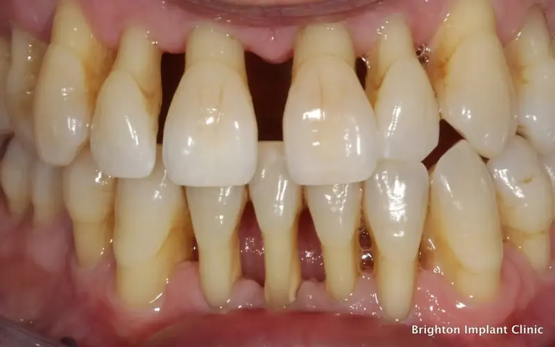

Hello, it's Doc Ronald. Bleeding when you brush is not normal. It is often the first sign of gum disease, which comes in two stages: gingivitis and periodontitis.
Gingivitis: inflamed gums
Gingivitis is painful inflammation of the gums. It is the early stage of gum disease, and the good news is that it can be reversed.
Common causes
- Plaque build-up from poor brushing technique (the most common cause)
- Hormone changes during pregnancy
- Some medications, such as certain epilepsy drugs
- Smoking and heavy alcohol use
Warning signs
- Tender, swollen or reddish gums
- Bleeding when brushing or flossing
- Bad breath
- Gums starting to recede
Prevention
- Brush with the correct technique, using a soft-bristled brush
- Replace your toothbrush every three months
- Floss at least once a day
- Use an antiseptic mouthwash
- Avoid smoking and chewing tobacco
- Keep up routine dental visits
Caring for bleeding or swollen gums at home
- Toothpaste made for gum health
- Warm salt-water rinses
- Foods rich in vitamin C, such as oranges, pawpaw, pineapple and lemon
- Soft, gum-friendly foods while your gums heal
Periodontitis: the chronic stage
If gingivitis is left untreated, it can become periodontitis. The gums pull away from the teeth, the supporting bone can be lost, and teeth can loosen or fall out.
Signs of periodontitis
- Pockets forming between teeth and gums
- Pain when chewing and a bad smell
- Loose or lost teeth
- Receding gums that make teeth look longer
- A change in how your teeth bite together
- Dark-brown tartar around the teeth
How we treat it
- Scaling to remove bacteria and tartar
- Root planing to clean the root surfaces
- Antibiotics where needed to control infection
- Pain relief for comfort
Prevention is usually easy: good daily hygiene, regular dental visits, and healthy habits and diet.
Frequently asked questions
Is gingivitis contagious?
No.
Is gum disease reversible?
Only gingivitis, the early stage, is reversible. Untreated gum disease can cause permanent damage, so see a dentist early.
What are the dangers of gum disease?
Periodontitis can lead to tooth loss and serious infections, and can affect your general health.
Why do some people get gum disease and others don't?
Mainly oral hygiene and lifestyle. Some conditions, such as diabetes and HIV, also raise the risk.